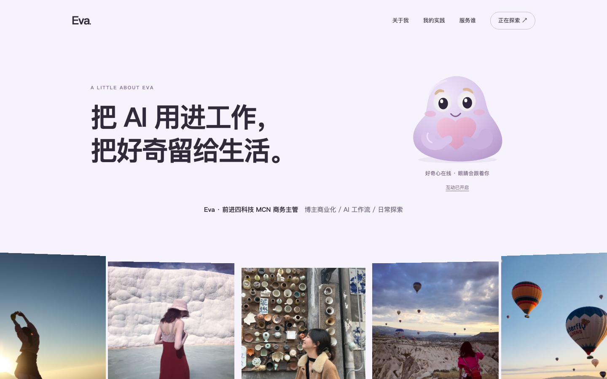
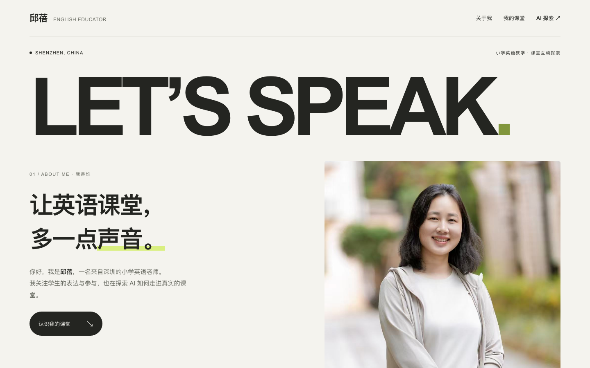
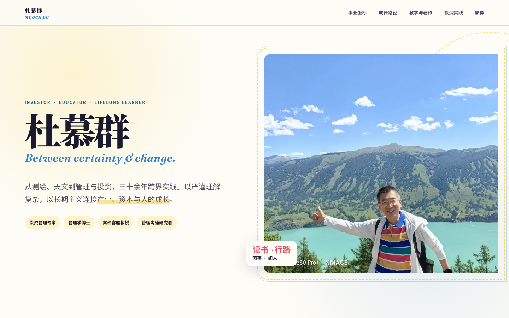

先把现场说清楚
行业、角色、客户和具体卡点越真实，网站越不像泛泛的个人简介。
同一个教室里，长出了不同的业务现场：课堂、芯片、市场、投资、商务与个人品牌。网站不是一张简历，而是每个人给 AI 的 Context 第一次被看见。



来自今天课堂的 10 份个人网站。每张卡片都连接到对应的真实网页文件；点击图片放大浏览，或直接打开完整作品。
有人从一节英语课出发，有人从芯片采购、博主商务、健康照明和投资研究出发。先把现场说清楚，再让 AI 接手重复工作，网站就从“作业”变成了下一步的入口。
行业、角色、客户和具体卡点越真实，网站越不像泛泛的个人简介。
把重复工作、判断标准和服务对象拆出来，经验就有了产品化的起点。
同样是个人网站，可以是课堂宣言、业务合作页，也可以是研究系统首页。
今天能打开，下一步就能继续迭代成获客入口、工作台或可交付产品。
作品会持续更新。新增网站、截图或本人确认后的信息，可以继续加入本展。